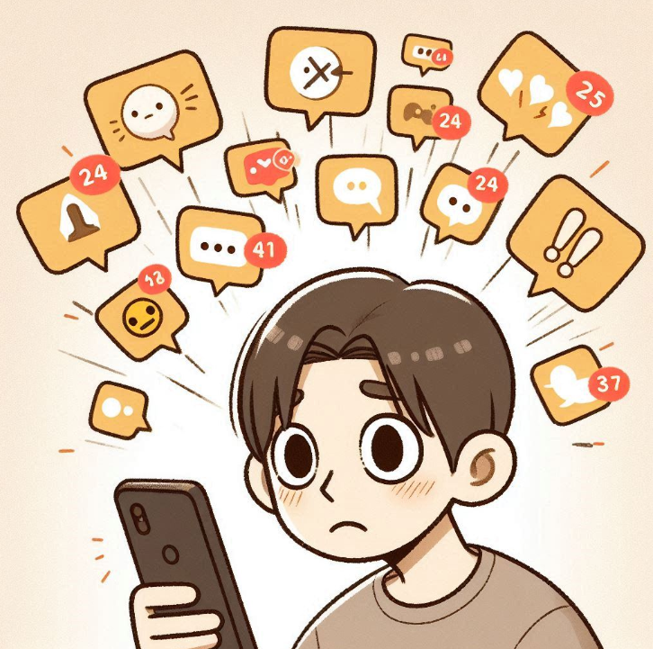
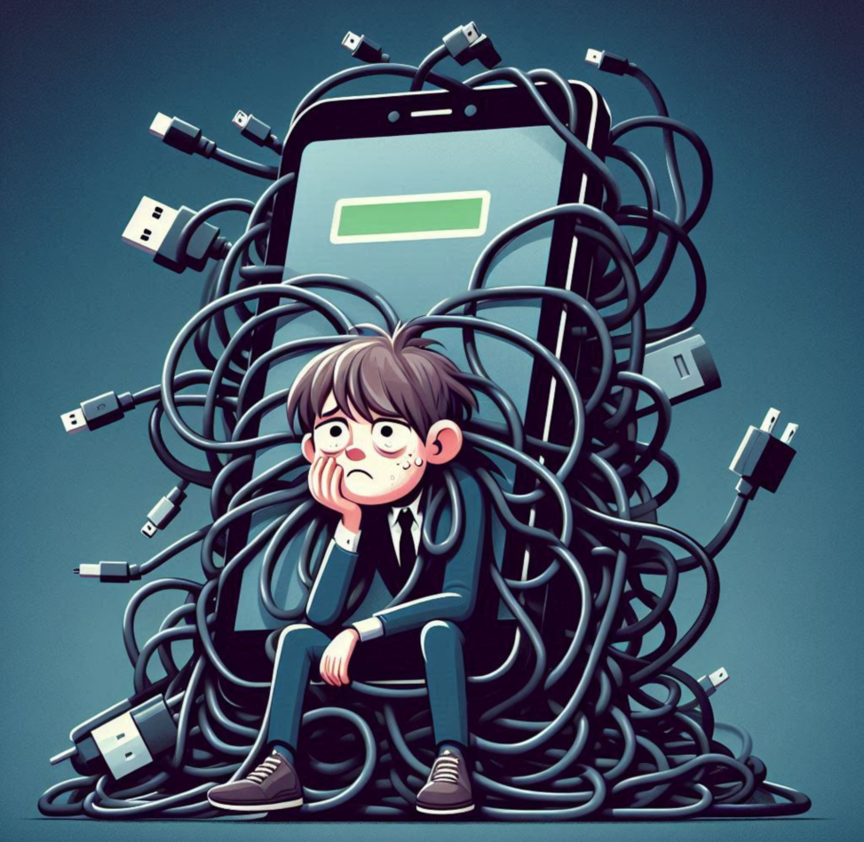

Congratulations! You are the owner of your smartphone and a model citizen of the digital world. You are not anxious even if you log out sometimes. You are a true master!
Try these tips!
Practice a 'Digital Fasting Day' once a week: Try intentionally staying away from your phone in the evening and enjoy books or music.
Explore new offline hobbies: Find new activities to further enhance your sense of balance.
Spread positive influence: If you have friends struggling with smartphone use, share your tips with them.
Share Result
📱 In a Love-Hate Relationship with Your Smartphone 💔
Your score: -

You have a love-hate relationship with your smartphone. Do you often experience the magic of 'just a minute' turning into 3 a.m.? It's not too late!
Try these tips!
Declare your bedroom a 'Smartphone Clean Zone': Leave your charger outside and use a cheap alarm clock. The effect will surprise you!
Turn off unnecessary notifications: Disable notifications for shopping, games, and other non-essential apps. Take control of your time!
Set app usage limits: Use your phone's screen time feature to limit time on SNS, YouTube, etc. Let your phone nag you!
Share Result
😵 Almost One with Your Smartphone 😵
Your score: -

Is your smartphone growing out of your hand? If you are with your phone from the moment you wake up, even in the bathroom, you are a 'pro smartphone user'!
Try these tips!
Use 'Do Not Disturb' mode actively: Schedule DND mode during work, study, and sleep to block temptations.
Create physical 'phone-free zones': Designate places like the dining table or bed as phone-free and make rules with family or roommates.
Plan meaningful alternative activities: Decide in advance what to do with your phone-free time (e.g., 10-min walk, read 5 pages).